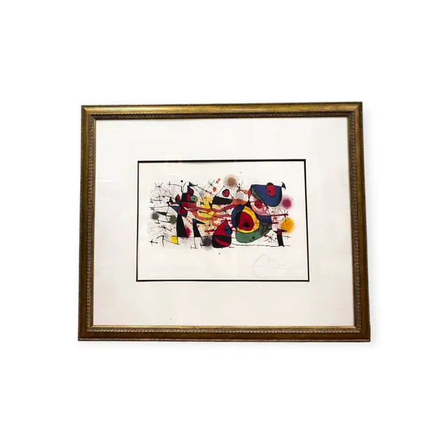
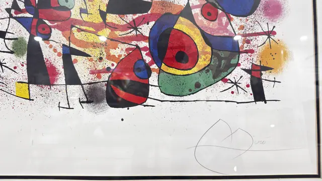
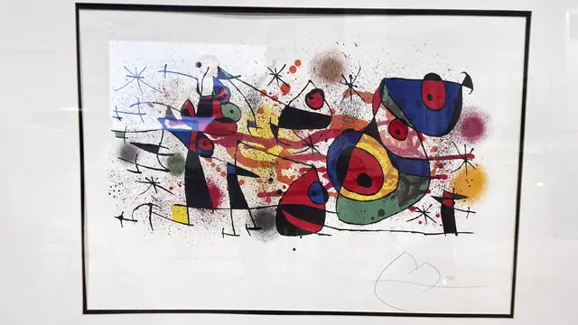
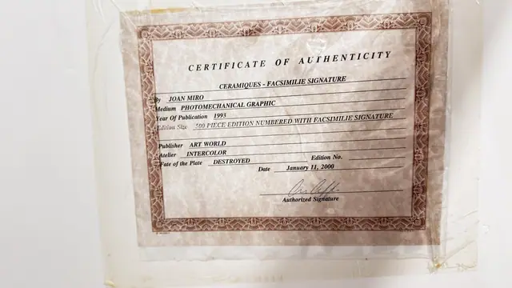
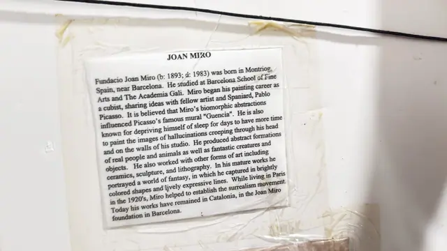
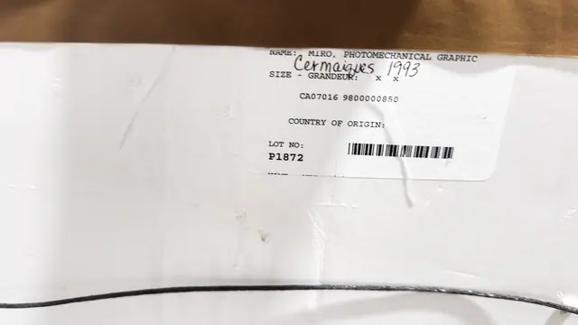

Paintings & Prints
Joan Miro Ceramiques Photomechanical Graphic, Signed in the Plate, Framed, 1993
Joan Miro · published 1993
Price Upon Request






About the Item
Joan Miro. A wide horizontal composition scattered with Miro's black stick figures, spiky stars and eyed biomorphs, punctuated by discs and crescents of scarlet, cobalt, emerald and cadmium yellow and hazed with fine spray-spattered pink and orange. The white ground is left largely open, with a thin black keyline border, and a facsimile signature appears in the lower right of the sheet. Colour is flat and even with no plate mark or ink relief. Medium: photomechanical colour graphic (offset reproduction) on paper, facsimile signature. Signed lower right of the sheet, facsimile. Edition: 500 piece edition numbered with facsimile signature. Accompanied by a certificate: Certificate for 'Ceramiques' by Joan Miro, photomechanical graphic published 1993 in an edition of 500 numbered impressions with facsimile signature, plate destroyed; the edition number field is left blank. Inscribed on the reverse or mount: CERTIFICATE OF AUTHENTICITY; CERAMIQUES - FACSIMILIE SIGNATURE; By JOAN MIRO; Medium PHOTOMECHANICAL GRAPHIC. Condition: Sheet clean and bright, mat crisp; certificate is stored in a yellowed plastic sleeve behind the frame. Frame gilding lightly rubbed. Glazing glare throughout. The image derives from Ceramiques de Miro et Artigas, a 1974 series of colour lithographs published by Maeght in Paris recording the ceramics Joan Miro created with his lifelong collaborator, the ceramicist Josep Llorens Artigas; the principal plate of the series is catalogued as Mourlot 928.
About the Artist
Joan Miro (1893-1983) was a Catalan painter and printmaker whose floating signs, stars and biomorphic forms bridged Surrealism and abstraction. His graphic work carries the same playful vocabulary as his canvases.
Details
- Creator:
- Joan Miro
- Creation Year:
- published 1993
- Dimensions:
- Height: 36.5 in (92.71 cm)
Width: 44.0 in (111.76 cm)
outside of frame - Medium:
- photomechanical colour graphic (offset reproduction) on paper, facsimile signature
- Edition:
- 500 piece edition numbered with facsimile signature
- Period:
- 20Th
- Condition:
- Offered in the condition shown in the photographs.
- Reference Number:
- VO-256
- Documentation:
- Certificate for 'Ceramiques' by Joan Miro, photomechanical graphic published 1993 in an edition of 500 numbered impressions with facsimile signature, plate destroyed; the edition number field is left blank.
- Gallery Location:
- CERTIFICATE OF AUTHENTICITY; CERAMIQUES - FACSIMILIE SIGNATURE; By JOAN MIRO